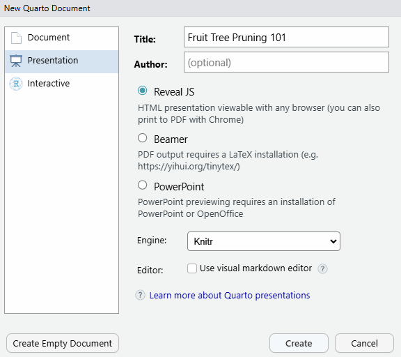

flowchart LR A[qmd] --> B(Jupyter) A --> C(knitr) B --> D[md] C --> D D --> E(pandoc) E --> F[pdf] E --> G[html] E --> H[docx] classDef yellowBox fill:#FFFFC0 class B,C,E yellowBox
Part 2: HTML Outputs
It all starts with a qmd file

Anatomy of a Quarto Document
---
title: "The Palmer Penguins"
format: html
---
## About the Penguins
The palmerpenguins data contains size measurements for three penguin species
observed on three islands in the
[Palmer Archipelago](https://en.wikipedia.org/wiki/Palmer_Archipelago),
Antarctica.

There are three species of penguins in the dataset:
::: {.cell}
```{.r .cell-code}
library(dplyr)
```
::: {.cell-output .cell-output-stderr}
```
Attaching package: 'dplyr'
```
:::
::: {.cell-output .cell-output-stderr}
```
The following objects are masked from 'package:stats':
filter, lag
```
:::
::: {.cell-output .cell-output-stderr}
```
The following objects are masked from 'package:base':
intersect, setdiff, setequal, union
```
:::
```{.r .cell-code}
penguins |>
group_by(island, species) |>
summarize(count = n())
```
::: {.cell-output .cell-output-stderr}
```
`summarise()` has grouped output by 'island'. You can override using the
`.groups` argument.
```
:::
::: {.cell-output .cell-output-stdout}
```
# A tibble: 5 × 3
# Groups: island [3]
island species count
<fct> <fct> <int>
1 Biscoe Adelie 44
2 Biscoe Gentoo 124
3 Dream Adelie 56
4 Dream Chinstrap 68
5 Torgersen Adelie 52
```
:::
:::
## Body Mass Comparison
Adelie and Chinstrap penguins have approximately the same body mass.
Gentoo penguins however are noticeably bigger.
::: {.cell}
```{.r .cell-code}
library(ggplot2)
ggplot(penguins, aes(x = species, y = body_mass)) +
geom_boxplot()
```
::: {.cell-output .cell-output-stderr}
```
Warning: Removed 2 rows containing non-finite outside the scale range
(`stat_boxplot()`).
```
:::
::: {.cell-output-display}
{width=672}
:::
:::
It all starts with a qmd file
flowchart LR A[qmd] --> B(Jupyter) A --> C(knitr) B --> D[md] C --> D D --> E(pandoc) E --> F[pdf] E --> G[html] E --> H[docx] classDef yellowBox fill:#FFFFC0 class B,C,E yellowBox
Example: Data Analysis Notebook
=======Markdown favorites: Callout Blocks
Quarto has several ‘callout blocks’ that you can use to add text boxes.
::: {.callout-important}
## Don't foreget to add a user-agent to your `httr2` header
The __User-Agent__ header is an HTTP header intended to identify the user agent responsible
for making a given HTTP request.
:::↓ ↓ ↓
Don’t foreget to add a user-agent to your
httr2 header
The User-Agent header is an HTTP header intended to identify the user agent responsible for making a given HTTP request.
Markdown favorites: Hyperlinks
Hyperlinks are easy to add to text.
For more info, please visit our [training page](https://igis.ucanr.edu/Training/).Markdown favorites: blank line
=======Markdown favorites: Footnotes
Growers in the Valley may have to manage one additional generation of Navel orangeworm each
season under climate change [^1].
[^1]: based on a degree day model with project climate data, see Pathak et al (2021)↓ ↓ ↓
Growers in the Valley may have to manage one additional generation of Navel orangeworm each season under climate change 1.
Footnote Tips
=======
<<<<<<< Updated upstream
=======
YAML Favorites: Paged Tables
Examples
e-Books
Report generator
Presentations
Quarto can generate presentations in 3 formats:
<<<<<<< Updated upstream
=======
Presenting revealjs Slides
f |
full screen mode (esc to escape) |
s |
open Speaker View |
alt + click |
zoom in |
o |
overview mode |
e |
toggle back/forth to pdf export mode (then print to PDF with your browser) |
m |
toggle menu |
? |
see more tips |
If you can’t remember these keyboard shortcuts, just click the menu button and go to ‘Tools’.
Quarto Websites
======= <<<<<<< Updated upstreamGetting Help: Guides, Community, Documentation
Present like a Pro
=======Tips ’n Tricks
<<<<<<< Updated upstream
Footnotes
based on a degree day model with project climate data, see Pathak et al (2021)↩︎